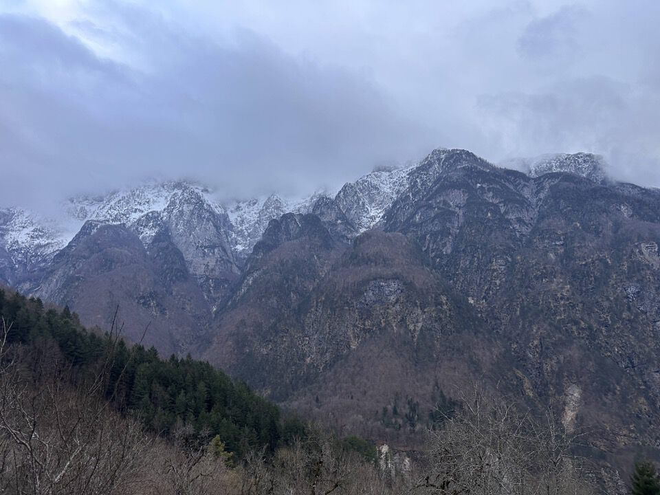

Previsioni meteo da disperazione: pioggia continua, diluvio universale. Ormai rassegnati, a sera ci accorgiamo che in zona Tarvisio le previsioni sono migliori, bon dai proviamoci...
Partiamo ad un orario vergognoso con l'idea di fare giusto una camminatina, magari anche solo due orette... ne uscirà un girone da nove ore, senza aver preso nemmeno una goccia, giornata regalata!
Le speranze erano talmente basse che non ho neppure portato con me la macchina fotografica: perdonatemi per la pessima qualità di questa pagina.
Salendo lungo la Costa Not vediamo dall'altra parte un misterioso buco nella roccia con qualcosa di colore rosso acceso... anin a viodi?
Nel mentre osservo il versante Nord del Cuel da la Bareta... interessante.
Beh, come abbiamo detto finita la gita, potevamo risparmiarcelo.
Poco sotto lo stavolo Compassìt troviamo un'ottima mulattiera: ah finalmente! Non so però dove la si prenda, noi lungo la Costa Not abbiamo trovato solo tracce di animali, forse la mulattiera parte dal riu dai Balins.

Stavolo Compassìt: che posto!
Seguiamo un ottimo sentiero che ci fa salire e ad una certa raggiungiamo un bivio; a sx credo si vada a Canìne, ma la traccia di destra è troppo bella: seguiamola per un pezzetto dai.

Splendida traccia di cacciatori! Essa è «a metà» fra i due traversi (sentieri neri) segnati sulla Tabacco.
Con dei passaggi piuttosto esposti la traccia porta sulla costa appena più ad Est: da tornare perché qui ci sono davvero tanti sentieri da scoprire.
Torniamo indietro, e su ora verso lo stavolo Canine.
Bellissimo.
Con qualche titubanza iniziamo a salire per la costa Sud che sovrasta lo stavolo Canine: terreno molto ripido e tagli spariti, ma ad una certa troviamo i resti di una salina di cacciatori. Noi ci si accontenta di poco... (ma non serve altro!).
ATTENZIONE (aggiunta successiva): non è questo il modo corretto per salire alle Pale di Chiout di Gus da stavolo Canine! Il vero sentiero inizia pochi metri dopo stavolo Canine e non percorre neppure un metro del costone Sud: esso si tiene più ad Ovest e conduce sulla costa Nord-Ovest della q1179.7 CTR. Dalla forcella a Nord di detta quota il sentiero continua virando verso destra (Est) fino a congiungersi alla strada di guerra delle Pale di Chiout di Gus a q1260 circa.
La cosa è molto istruttiva: sfruttando i pochi punti deboli della montagna il sentiero non è mai ripido, a differenza del percorso diretto per il costone Sud. Grazie dotôr!
Il percorso ci è proprio piaciuto, ma si presta poco ad un report fotografico.
Di là osservo compulsivamente il riu dai Balins con le pale boscose che s'immettono in esso; vedo pure l'uscita del mitico sentiero Pale di Chiout di Gus - f.lla Mincigos che percorsi un anno fa con Ilaria e Greta.
Foto di qualità agghiacciante, ma poco importa: vedo Cuestemulìn con lo Jouf; in centro foto il riu da le Cjamoçe che abbiamo attraversato durante la percorrenza del sentiero Patòc - Zè.
Eccoci alla selletta a Nord della sommità delle Pale di Chiout di Gus, da dove eravamo scesi per traversare fino a f.lla Mincigos. Percorso stupendo, impegnativo.
Quella volta però mica m'accorsi che il sentiero di guerra proseguiva oltre!
Seguiamo un tratto di cengia artificiale, peccato che essa si interrompa quasi subito (che ci fosse un ponticello un tempo?). Non si riesce a passare e stiamo già per girare i tacchi, quando noto un cavetto di ferro penzolante!
Basta abbassarsi (esposto) e con l'aiuto del cavetto si torna sulla cengia.
Incredibile! Tutto scavato.
Dal cocuzzolo pianeggiante dove finisce la mulattiera: verrebbe quasi voglia di continuare a salire lungo la cresta Sud dello Jôf di Dogna. È lunga e da qui in poi s'incattivisce!


Scendiamo per la rilassante mulattiera delle Pale di Chiout di Gus a Chiout Tassot.
Fatto trenta facciamo trentuno no? Decidiamo di seguire la mulattiera che collega Chiout Tassot a Chiout Zuquin (anello Rio Mas?).
La mulattiera è molto bella e piacevole; peccato per alcune frane, tutte facilmente sorpassabili dal basso (scendendo nei rii per capirci).
Rio Mas.

Uno dei tanti stavoli del rio Mas.
Da Chiout Zuquin: visioni da tregenda.
Un anello di grande soddisfazione.
Inoltre il fatto di essere partiti senza chiari obiettivi e che ci siamo mossi in piena libertà esplorando le tracce che man mano incontravamo, sempre con la gioia della scoperta, ha reso l'uscita davvero piacevole e interessante.